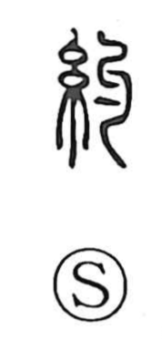

約

Kun: tsuzumaru, tsuzumeru | On: yaku
to tie ・ to bind ・ promise ・ treaty ・ approximately ・ general
Explanation
約 combines 糸, thread or cord, with 勺 as its phonetic. 勺 pictures a ladle with a slightly bent handle. Bending the cord back upon itself makes the knot: 約 is tying, wrapping, or binding.
A knot could serve as evidence of an undertaking. The physical binding becomes a pledge or agreement, giving the familiar promise in 約束. The parties are brought within a fixed commitment as the cord is held within its knot.
Binding also draws something into a smaller compass. 約 therefore gives contracting, reducing, and omitting detail. An abbreviated statement presents the main extent, producing approximately or about. Promise and concision share this bringing-together within a defined limit.